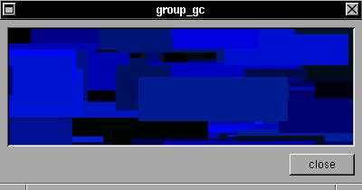

This is a example of how switch graphic context with group widgets.EXAMPLE
This is a example of a GC (graphic context) inside a group box: you can switch the two groups.#include <xstep.h> struct xtree *group1,*group2; void draw(struct xtree *t) { if(!animate) return; XSetForeground(display,t->gc,rand()%256); XFillRectangle(display,t->win,t->gc, t->aw/2+rand()%t->aw-rand()%t->aw, t->ah/2+rand()%t->ah-rand()%t->ah, rand()%t->aw/4,rand()%t->ah/4); downbox(0,0,t->aw,t->ah,invisible,t); } void group1f(struct xtree *t) { XRaiseWindow(display,group1->win); } void group2f(struct xtree *t) { XRaiseWindow(display,group2->win); } void xmain(int n,char *p[]) { window_create(0,0,400,180,"group_gc"); animate=1; group1=group_begin(8,8,-8,-(24+16),getcolor(0,-1,0)); group1->broadcast=draw; group_end(); group2=group_begin(8,8,-8,-(24+16),getcolor(-1,0,0)); group2->broadcast=draw; group_end(); button_create(-(8+80*2),-8,72,24,"group 1",group1f); button_create(-(8+80*1),-8,72,24,"group 2",group2f); button_create(-(8+80*0),-8,72,24,"close",window_close); }